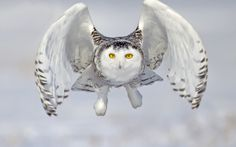
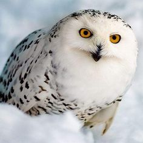
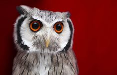
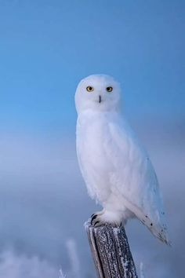

Սպիտակ բու

Արկտիկան և Սուբարկտիկան, չնայած այս գոտիներում ցուրտ եղանակին, կենդանական աշխարհի համար աղքատ վայրեր չեն: Դրանք հիմնականում գերակշռում են թռչունները: Բայց սա միայն ամռանն է: Ձմռանը այնտեղ մնում են միայն թրթուրներն ու սպիտակ բվերը ՝ բվերի ցեղի ներկայացուցիչների, բուերի կարգի ներկայացուցիչներ: Սպիտակ բուի մեկ այլ անուն բեւեռային է: Այս թռչունը բևեռային լայնությունների տիպիկ գիշատիչ է: Դա ամենամեծն է ամբողջ տունդրայում:
Առանձնահատկությունները
Թռչնի կարևոր առանձնահատկությունն այն է, որ նա կարող է երկար ժամանակ ապրել առանց սննդի, իսկ բուն կարող է որսորդության ցանկացած ժամանակ ընտրել: Նրա համար հեշտ է նավարկել տիեզերքը ինչպես լուսավոր օրը, այնպես էլ բևեռային գիշերների խավարում:
Շնորհիվ տաք սպիտակ մուշտակի, որին բնությունն օժտել է այս փետուրը, բուն կարող է հեշտությամբ ապրել տունդրայի սառած վայրերում և որս կատարել գիշերային ցածր ջերմաստիճանում:

Այս թռչնի ջերմ փետուրի մեկ այլ դրական հատկություն էլ կա: Սպիտակ բու նա ավելի քիչ էներգիա է ծախսում իր տաք հանդերձանքի մեջ, ուստի նրան վերականգնելու համար նրան պակաս սնունդ է պետք: Այդ պատճառով բուները չեն վախենում սննդի պակասից և նրանք բավարարվում են համեստ սնունդով ՝ առանց խնդիրների:

Որքան քիչ ձյունոտ բու թռչելու է ձուկ որսալու, այնքան ավելի շատ շանսեր ունի նա ողջ մնալու: Սա նրա տաք սպիտակ փետուրի մեկ այլ դրական կողմն է: Առանց դրա թռչնի համար դժվար կլիներ գոյատևել արկտիկական դժվար պայմաններում:
Մեծ սպիտակ բու համարվում է տունդրայի ամենամեծ ու ամենագեղեցիկ թռչունը: Սովորաբար էգը ավելի մեծ է, քան իր արուն: Դրա չափերը հասնում են 70 սմ-ի, թևերի բացվածքը `165 սմ, իսկ քաշը` 3 կգ:

Նրա աչքերը վառ դեղին գույնով են `մեծ ու փափկամազ թարթիչներով: Արժե ուշադրություն դարձնել այս թռչնի տեսքին: Նա միշտ նեղացնում է աչքերը: Այնպիսի տպավորություն է ստեղծվում, որ բուն թիրախ է դառնում:
Թռչնի ականջներն այնքան փոքր են, որ գործնականում չեն երեւում նրա կլոր գլխին: Կտուցը նույնպես զարմանալի չէ, այն սեւ է և գրեթե ամբողջությամբ թաքնված է բևեռ բուի փետուրի մեջ: Թաթերի վրա երեւում են սեւ ճանկեր:
Գրանցված են կարմիր գրքում․
